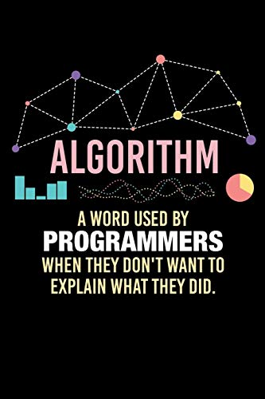

C10 Algorithmes sur les arbres
Activités
 Activité 1 : Parcourir un arbre
Activité 1 : Parcourir un arbre
-
Rappel sur l'implémentation utilisée:
-
Récupérer et enregistrer l'implémentation des arbres binaires vu au chapitre 8 : Implémentation arbres binaires
-
Utiliser cette implémentation pour définir et afficher l'arbre binaire ci-dessous :
graph TD A["A"] --> B["B"] A --> C["C"] B --> D["D"] B --> E["E"] C --- V1[" "] C --> F["F"] D --- V2[" "] D --> G["G"] F --> H["H"] F --- V3[" "] style V1 fill:#FFFFFF, stroke:#FFFFFF linkStyle 4 stroke:#FFFFFF,stroke-width:0px style V2 fill:#FFFFFF, stroke:#FFFFFF linkStyle 6 stroke:#FFFFFF,stroke-width:0px style V3 fill:#FFFFFF, stroke:#FFFFFF linkStyle 9 stroke:#FFFFFF,stroke-width:0px - Quelle est la taille de cet arbre ? Vérifier que la méthode
taillede l'implémentation renvoie le résultat correct. - Quelle est la hauteur de cet arbre ? Vérifier que la méthode
hauteurde l'implémentation renvoie le résultat correct.
Le but cette activité est de découvrir (et d'implémenter) quatre algorithmes de parcours d'un arbre qui donneront les noeuds dans un ordre différent :
- Le parcours en largeur
- Le parcours en profondeur préfixé
- Le parcours en profondeur infixé
- Le parcours en profondeur suffixé
-
-
Le parcours en largeur
- Selon vous, quel sera l'ordre des noeuds dans un parcours en largeur sur l'arbre ci-dessous ?
- D'un point de vue algorithmique quel est le procédé utilisé pour obtenir cet ordre ?
-
Pour implémenter ce parcours, on propose la méthode ci-dessous, la compléter et la recopier dans l'implémentation des arbres binaires :
def parcours_largeur(self): # Ordre de traitement : noeud, fils gauche, le fils droit a_traiter = [.........] pl = [] while len(a_traiter)!=0: noeud_courant=a_traiter[0] pl.append(..............) # Si le noeud a un fils gauche l'ajouter à ceux à traiter if noeud_courant.gauche!=.....: a_traiter........(.................) # De même s'il a un fils droit if .............: a_traiter........(.................) a_traiter.pop(.) return pl -
Tester cette méthode sur l'arbre définie dans la première partie.
- Cette méthode fonctionne-t-elle pour l'arbre vide ? Sinon la corriger.
- Reconnaître la structure de donnée utilisée pour les noeuds à traiter (variable
a_traiter). Est-il judicieux d'utiliser une liste pour cette structure de données ?
-
Le parcours en profondeur
Dans un parcours en profondeur on s'appuie sur la définition récursive des arbres. Pour parcourir un arbre \(T=(r,sag,sad)\) on va donc parcourir \(sag\) et \(sad\). On comprend alors qu'on a trois possibilité :- Lister l'étiquette \(r\) avant de parcourir \(sag\) et \(sad\), c'est le parcours prefixé.
- Lister l'étiquette \(r\) après le parcours de \(sag\) mais avant celui de \(sad\), c'est le parcours infixé.
-
Lister l'étiquette \(r\) après le parcours de \(sag\) et de \(sad\), c'est le parcours suffixé.
- Quel sera l'ordre des noeuds pour chacun de ces trois parcours sur l'arbre de la première partie ?
-
Ecrire une implémentation du parcours préfixé.
Aide
Traduire en méthode récursive que le parcours de \(T=(r,sag,sad)\) est \(r\) + le parcours de \(sag\) + le parcours de \(sad\)
-
Ecrire une implémentation du parcours infixé
- Ecrire une implémentation du parcours suffixé.
Activité 2 : Arbre binaire de recherche
On considère l'arbre binaire suivant noté \(T\) et dont les étiquettes sont des nombres entiers.
graph TD
N28["28"] --> N25["25"]
N28 --> N32["32"]
N25 --> N6["6"]
N25 --> N27["27"]
N32 --> N31["31"]
N32 --> N33["33"]
N6 --> N3["3"]
N6 --> N15["15"]
N27 --> N26["26"]
N27 --- V1[" "]
N33 --- V2[" "]
N33 --> N35["35"]
N15 --> N12["12"]
N15 --> N20["20"]
style V1 fill:#FFFFFF, stroke:#FFFFFF
linkStyle 9 stroke:#FFFFFF,stroke-width:0px
style V2 fill:#FFFFFF, stroke:#FFFFFF
linkStyle 10 stroke:#FFFFFF,stroke-width:0px-
Propriété des arbres binaires de recherche
- On considère la racine de cette arbre. Ecrire son étiquette puis lister toutes les étiquettes de son sous arbre gauche et toutes les étiquettes de son sous arbre droit. Que remarquez-vous ?
- Pour un autre noeud quelconque de cet arbre, donner son étiquette puis toutes les étiquettes de son sous arbre gauche et toutes les étiquettes de son sous arbre droit. Que remarquez-vous ?
-
L'arbre binaire précédent est un arbre binaire de recherche. Proposer une définition des arbres binaire de recherche en vous basant sur la propriété observée ci-dessus.
Note
Par souci de simplicité on considère par la suite que toutes les étiquettes d'un arbre binaire de recherche (noté abr) sont uniques. Ainsi dans l'arbre précédent un entier donné ne peut pas apparaître deux fois.
-
Dessiner tous les abr ayant 3 noeuds et contenant les nombres 1, 2 et 3.
- Dessiner un abr dégénéré de hauteur 5 et contenant les nombres 1,2,3,4 et 5.
- Dessiner un abr complet de taille 7 et contenant les nombres 1,2,3,4,5,6 et 7.
-
Recherche d'un élément dans un arbre binaire de recherche
- On cherche à savoir si la valeur 18 est présente dans l'arbre \(T\). L'arbre entier doit-il être exploré ? Justifier.
- Quel chemin faut-il explorer dans \(T\) pour rechercher la valeur 15 (surligner en rouge).
- Même question pour 37 (surligner en bleu).
-
Proposer un algorithme permettant de rechercher une valeur dans un arbre binaire de recherche.
Aide
Penser récursif !
-
Que peut-on dire de la complexité de cet algorithme ?
Aide
On pourra s'appuyer sur les cas extrêmes (arbre complet ou arbre dégénéré) et faire le lien avec la recherche dans une liste ou la recherche dichotomique dans une liste triée. D'autre part on pourra remarquer qu'à chaque étape de la recherche on descend d'un niveau dans l'arbre.
-
Insertion d'un élément dans un arbre binaire de recherche
- A quelle position faut-il insérer le noeud d'étiquette 4 dans \(T\) pour qu'il conserve sa propriété ?
- Même question pour le noeud d'étiquette 30.
-
Proposer un algorithme permettant d'insérer une valeur dans un arbre binaire de recherche.
Aide
Comme ci-dessus, penser à utiliser la récursivité. D'autre part on rappelle qu'on a supposé que les étiquettes sont uniques, par conséquent, on renverra une erreur dans le cas où la valeur à insérer existe déjà dans l'arbre.
Cours
Vous pouvez télécharger une copie au format pdf du diaporama de synthèse de cours présenté en classe :
Attention
Ce diaporama ne vous donne que quelques points de repères lors de vos révisions. Il devrait être complété par la relecture attentive de vos propres notes de cours et par une révision approfondie des exercices.
Exercices
Exercice 1 : Parcours d'arbre
graph TD
P["P"] --> Y["Y"]
P --> T["T"]
T --> H["H"]
T --> O["O"]
O --- E[" "]
style E fill:#FFFFFF, stroke:#FFFFFF
linkStyle 4 stroke:#FFFFFF,stroke-width:0px;
O --> N["N"]-
Quel sera l'ordre des noeuds lors du parcours de l'arbre ci-dessus :
- lors d'un parcours en largeur,
- lors d'un parcours en profondeur prefixe,
- lors d'un parcours en profondeur infixe,
- lors d'un parcours en profondeur suffixe.
-
Vérifier vos réponses à la question précédente en utilisant les fonctions de parcours définies sur l'implémentation des arbres binaires vue en cours.
-
Mêmes questions avec l'arbre binaire suivant :
graph TD
Y["Y"] --> C["C"]
Y --> A["A"]
C --- V1[" "]
C --> R["R"]
A --> B["B"]
A --> L["L"]
R --> I["I"]
R --> O["O"]
B --> N["N"]
B --- V2[" "]
L --- V3[" "]
L --> E["E"]
style V1 fill:#FFFFFF, stroke:#FFFFFF
linkStyle 2 stroke:#FFFFFF,stroke-width:0px;
style V2 fill:#FFFFFF, stroke:#FFFFFF
linkStyle 9 stroke:#FFFFFF,stroke-width:0px;
style V3 fill:#FFFFFF, stroke:#FFFFFF
linkStyle 10 stroke:#FFFFFF,stroke-width:0px; Exercice 2 : Arbre binaire de recherche
graph TD
A["14"] --> B["9"]
A --> C["22"]
B --> D["5"]
B --> E["10"]
C --- V1[" "]
C --> F["28"]
D --- V2[" "]
D --> G["7"]
F --> H["24"]
F --- V3[" "]
style V1 fill:#FFFFFF, stroke:#FFFFFF
linkStyle 4 stroke:#FFFFFF,stroke-width:0px
style V2 fill:#FFFFFF, stroke:#FFFFFF
linkStyle 6 stroke:#FFFFFF,stroke-width:0px
style V3 fill:#FFFFFF, stroke:#FFFFFF
linkStyle 9 stroke:#FFFFFF,stroke-width:0px- Prouver que cet arbre est un arbre binaire de recherche.
- Dessiner l'arbre obtenu après insertion de la valeur
11dans cet abre.
Exercice 3 : Dessiner un arbre binaire de recherche
- Dessiner un arbre binaire de recherche complet, contenant les valeurs suivantes : 2,7,10,15,19,24,25.
- Dessiner un arbre binaire de recherche dégénéré contenant ces sept même valeurs.
- Même question lorsque l'arbre à la structure suivante :
graph TD A[" "] --> B[" "] A --> C[" "] B --> D[" "] B --> E[" "] C --- V1[" "] C --> F[" "] D --- V2[" "] D --> G[" "] style V1 fill:#FFFFFF, stroke:#FFFFFF linkStyle 4 stroke:#FFFFFF,stroke-width:0px style V2 fill:#FFFFFF, stroke:#FFFFFF linkStyle 6 stroke:#FFFFFF,stroke-width:0px
Exercice 4 : Implémentation des arbres binaires de recherche
- Récupérer et enregistrer l'implémentation des arbres binaires de recherche ci-dessous : Implémentation arbres binaires de recherche
- Compléter puis tester la méthode
appartientci-dessous qui permet de tester avec cette implémentation si un élément se trouve ou non dans un arbre binaire de recherchedef appartient(self,valeur): # Si l'arbre est vide, la valeur ne s'y trouve pas if self.racine==None: return False else: # Sinon on compare avec l'étiquette de la racine if int(self.racine.etiquette)==valeur: return ........ if valeur<int(self.racine.etiquette): # Création du sous arbre gauche sag = ArbreBinaire(.............) return .......... sad = ArbreBinaire(..............) return ................. - Ecrire une méthode
inserequi permet d'insérer une valeur dans un arbre binaire de recherche.
Exercice 5 : Arbres binaires de recherche avec une seule classe
On propose ici une implémentation des arbres binaires de recherche avec une seule classe, dans cette implémentation, l'arbre vide est celui dont la valeur est None (il n'a alors pas de fils)
-
Récupérer et enregistrer cette implémentation ci-dessous : Implémentation arbres binaires de recherche
Cette implémentation fournit les méthodes suivantes sur les arbres binaires :
est_videqui renvoieTrueouFalsesuivant que l'arbre est vide ou noninsere_une_valeurqui prend en argument un nombre et l'insère dans l'arbre binaire de rechercheshowqui affiche l'arbre (en faisant figurer les liens vers les fils vides)
-
Utilisation de l'implémentation
-
Dans un fichier différent, importer cette classe, créer un arbre binaire de recherche et y insérer la valeur 5 puis l'afficher :
import ab ex = ab.ABR() ex.insere_une_valeur(5) ex.affiche() -
Compléter de façon à ajouter la valeur 7 puis la valeur 2 et faire afficher l'arbre après chaque ajout.
-
-
Compléter cette implémentation en ajoutant les méthodes suivantes :
-
Une méthode
insere_valeursqui prend en argument une liste de valeurs et les insère toutes dans l'arbre -
Une méthode
taillequi renvoie la taille de l'arbre -
Une méthode
hauteurqui renvoie la hauteur de l'arbre
-
-
Ecrire (au moins) une méthode de parcours pour cette implémentation des arbres binaires.
Exercice 6 : Exercices de bac session 2021
-
Etranger (Jour 1) - Exercice 3
Corrigé disponible
Exercice 7 : Exercices de bac session 2022
-
Amérique du sud (Jour 1) - Exercice 3
Corrigé disponible
-
Mayotte et réseau AEFE (Jour 1) - Exercice 4
Corrigé disponible
-
Métropole (Jour 1) - Exercice 4
Corrigé disponible
-
Métropole session de septembre (Jour 1) - Exercice 1
Corrigé disponible
Exercice 8 : Exercices de bac session 2023
-
Sujet Zéro-A (Jour x) - Exercice 3
Corrigé disponible
-
Sujet Zéro-B (Jour x) - Exercice 3
Corrigé disponible
Humour d'informaticien
